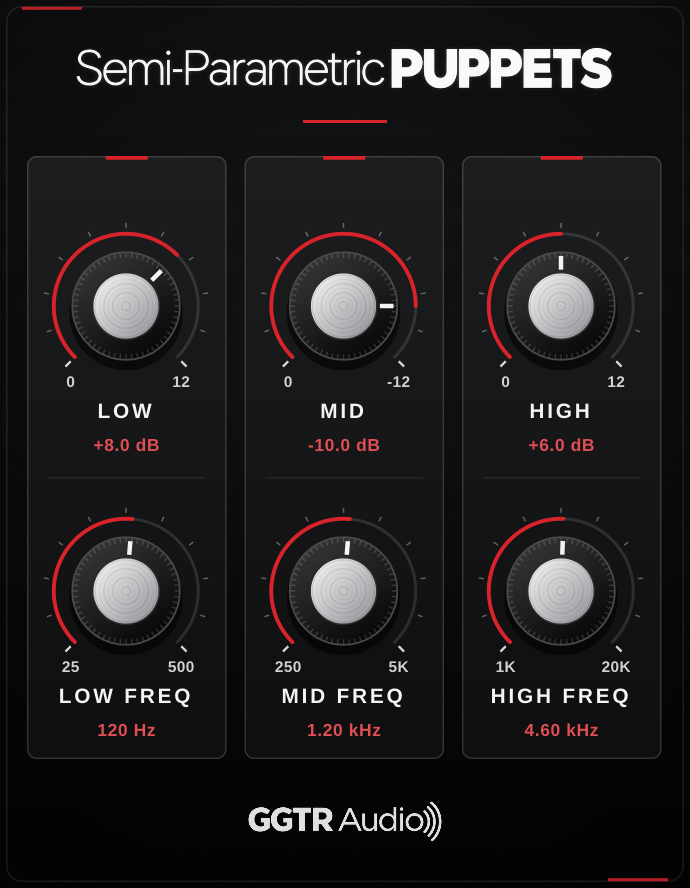

FREE VST3 PLUGIN
GGTR Tone Match
Compare your guitar sound with a reference and create a filter that helps match its frequency balance.
View release ↗GGTR Audio is an independent developer project built around a passion for guitar and music. We create useful tools for musicians, explore new ideas and share our products for free.
Compare your guitar sound with a reference and create a filter that helps match its frequency balance.
View release ↗
A three-band semi-parametric EQ with separate gain and frequency controls for Low, Mid and High bands.
View release ↗Watch the introduction and see how the plugin compares tones and creates a matching filter.
Our first release helps guitarists bring their own tone closer to a reference recording.
Compare your guitar sound with a reference and create a corrective filter based on their frequency balance. Audition the result in your DAW and export it as a WAV impulse response.
Use a reference recording to capture the tonal balance you want to approach.
Analyze your own signal and compare its frequency characteristics with the reference.
Generate an adjustable filter that helps move your sound toward the reference.
Export the resulting filter as a WAV impulse response for compatible workflows.
Tone Match focuses on frequency balance. It does not clone an amplifier, distortion, dynamics, cabinet, microphone or room.
A straightforward three-band semi-parametric EQ with independent gain and frequency controls for Low, Mid and High bands. Shape the tonal balance of guitar sounds and other audio sources.
Shape the low-frequency range, with frequency selection from 25 Hz to 500 Hz.
Adjust the midrange, with frequency selection from 250 Hz to 5 kHz.
Shape the high frequencies, with frequency selection from 1 kHz to 20 kHz.
Each band has its own gain control and frequency selector for focused tonal adjustments.
A straightforward process that fits into your existing guitar production setup.
Choose the recording whose overall tonal balance you want to explore.
Feed your own guitar signal into the plugin and compare the two signals.
Audition the matching filter, fine-tune it, and export a WAV IR when ready.
Our goal is to make hard-to-access tools used in guitar and music production more accessible in plugin form, develop new ideas, and share the products we create with everyone for free.
GGTR Audio, gitar ve müzik tutkusuyla yola çıkmış bağımsız bir geliştirici projesidir. Amacımız, gitaristlerin işine yarayabilecek yazılımlar ve küçük araçlar geliştirmek, bunları diğer müzisyenlerle paylaşmak ve müzik üretimini herkes için biraz daha erişilebilir hale getirmek.
Explore the plugin, read the documentation and get the latest release.